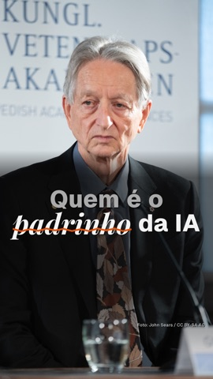

Tokens e custos
consumo.
tokens por dia · 37,9M em 30 diascusto por dia · US$ 539 em 30 diasSessões do Claude Code neste Mac, nesta pasta. Dia em zero = nenhuma sessão registrada. Custo = preço de tabela da API em dólar (Opus 5.5 US$ 4/20 por milhão, Sonnet 5.5 US$ 2/10, Fable 5.1 US$ 10/50); com assinatura, a fatura é outra.
Ver os números
| Dia | Tokens | Custo (US$) |
|---|---|---|
| 1 out | 764.270 | 18,42 |
| 2 out | 503.266 | 6,65 |
| 7 out | 444.086 | 4,20 |
| 8 out | 460.937 | 5,15 |
| 9 out | 191.001 | 2,95 |
| 13 out | 1.775.931 | 28,06 |
| 14 out | 7.808.581 | 78,45 |
| 15 out | 3.747.451 | 44,95 |
| 16 out | 1.054.589 | 11,90 |
| 17 out | 2.443.274 | 24,39 |
| 21 out | 3.880.764 | 90,73 |
| 22 out | 6.163.463 | 103,31 |
| 23 out | 8.671.930 | 119,90 |
por modelo.
- Opus 5.583% dos tokens
US$ 435,21 · 81% do custo - Sonnet 5.512% dos tokens
US$ 23,57 · 4% do custo - Fable 5.15% dos tokens
US$ 80,28 · 15% do custo
O Fable 5.1 é 5% dos tokens e 15% do custo. ElevenLabs (transcrição e música) fica de fora: ainda sem medição.
Ver os números
| Modelo | Tokens | Custo (US$) |
|---|---|---|
| Opus 5.5 | 31.367.707 | 435,21 |
| Sonnet 5.5 | 4.713.480 | 23,57 |
| Fable 5.1 | 1.828.356 | 80,28 |
por departamento.
tokens · custo · %Ver os números
| Departamento | Tokens | Custo (US$) |
|---|---|---|
| Direção (Atlas) | 23.659.623 | 401,81 |
| Tecnologia | 6.427.611 | 87,21 |
| Pós-produção | 2.661.582 | 19,91 |
| Roteiro | 2.108.352 | 12,32 |
| Estratégia e pesquisa | 1.786.353 | 11,33 |
| Arte e cor | 954.366 | 4,64 |
| Distribuição e dados | 311.656 | 1,84 |
quem mais consome.
| # | Agente | Rodou em | Tokens | Custo | Tarefas | Por tarefa |
|---|---|---|---|---|---|---|
| 1 | Atlas | Opus 5.5 Fable 5.1 | 23,7M | US$ 401,81 | 45 | US$ 8,93 |
| 2 | Camila Freitas | Opus 5.5 | 2,1M | US$ 28,54 | 4 | US$ 7,13 |
| 3 | Otávio Reis | Sonnet 5.5 | 723,5K | US$ 2,38 | 14 | US$ 0,17 |
| 4 | Clara Duarte | Sonnet 5.5 | 604,5K | US$ 2,61 | 13 | US$ 0,20 |
| 5 | Vera Campos | — | — | — | — | não rodou |
| 6 | Íris Moura | — | — | — | — | não rodou |
| 7 | Henrique Sales | — | — | — | — | não rodou |
Vera, Íris e Henrique ainda não rodaram: os portões começaram em 22 out. "Rodou em" é o modelo que aparece nos registros, que pode ser diferente do configurado hoje.
| # | Agente | Rodou em | Tokens | Custo | Tarefas | Por tarefa |
|---|---|---|---|---|---|---|
| 1 | Atlas | Opus 5.5 Fable 5.1 | 23,7M | US$ 401,81 | 45 | US$ 8,93 |
| 2 | Lia Monteiro | Opus 5.5 | 2,4M | US$ 28,39 | 2 | US$ 14,20 |
| 3 | Camila Freitas | Opus 5.5 | 2,1M | US$ 28,54 | 4 | US$ 7,13 |
| 4 | Diego Ferraz | Opus 5.5 | 2,0M | US$ 17,02 | 4 | US$ 4,25 |
| 5 | Marina Costa | Opus 5.5 | 938,7K | US$ 7,79 | 9 | US$ 0,87 |
| 6 | Tiago Lopes | Sonnet 5.5 | 922,6K | US$ 6,55 | 7 | US$ 0,94 |
| 7 | Gabriel Torres | Opus 5.5 | 748,8K | US$ 11,78 | 3 | US$ 3,93 |
Tarefa = uma execução do agente. O Atlas soma as sessões e os ajudantes (general-purpose, workflow, Explore).
custo por vídeo.


Só o trabalho dos agentes especialistas, pelo vídeo citado no pedido. A conversa do Atlas não entra.
@korvu_oficial · sincronizado em 23 out, 17:20 · o painel só lê os arquivos do projeto
Maquete · Tokens e custos · fora da tela
Estados de cada bloco e variações
Daqui para baixo não é a tela: é o que o engenheiro-frontend implementa quando o bloco não tem dado, está carregando ou falhou, e as vistas que só aparecem ao tocar. Regras: tokens-e-custos.md e design-system.md.
Estados de cada bloco
Números de consumo (KPIs)
Nenhuma sessão nos últimos 30 dias
Quando o Claude Code rodar neste projeto, os tokens e o custo equivalente aparecem aqui.
Consumo por dia
Nenhum dia com consumo
Cada dia com sessão do Claude Code vira um ponto; dia sem sessão fica em zero.
Por modelo e por departamento
Sem consumo para dividir
Quando houver consumo, ele aparece dividido por modelo e por departamento.
Quem mais consome
Ninguém rodou ainda
Quando um agente trabalhar numa sessão, ele entra no ranking com tokens, custo e tarefas.
Custo por vídeo
Nenhum pedido citou um vídeo
Quando um especialista trabalhar com videos/<slug> no pedido, o custo aparece no vídeo.
Ranking geral (a 2.ª vista do controle) dados reais
| # | Agente | Rodou em | Tokens | Custo | Tarefas | Por tarefa |
|---|---|---|---|---|---|---|
| 1 | Atlas | Opus 5.5 Fable 5.1 | 23,7M | US$ 401,81 | 45 | US$ 8,93 |
| 2 | Lia Monteiro | Opus 5.5 | 2,4M | US$ 28,39 | 2 | US$ 14,20 |
| 3 | Camila Freitas | Opus 5.5 | 2,1M | US$ 28,54 | 4 | US$ 7,13 |
| 4 | Diego Ferraz | Opus 5.5 | 2,0M | US$ 17,02 | 4 | US$ 4,25 |
| 5 | Marina Costa | Opus 5.5 | 938,7K | US$ 7,79 | 9 | US$ 0,87 |
| 6 | Tiago Lopes | Sonnet 5.5 | 922,6K | US$ 6,55 | 7 | US$ 0,94 |
| 7 | Gabriel Torres | Opus 5.5 | 748,8K | US$ 11,78 | 3 | US$ 3,93 |
Tarefa = uma execução do agente. O Atlas soma as sessões e os ajudantes (general-purpose, workflow, Explore).